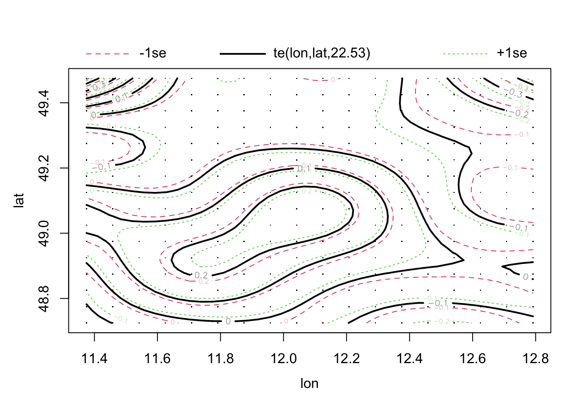

6 Correlation structures
This chapter explains how to model correlation structures in the residuals.
6.1 General Idea
Except for the random effects, we have so far assumed that observations are independent. However, there are a number of other common correlation structures that we may want to consider. Here a visualization from Roberts et al., 2016 (reproduced as OA, copyright: the authors).
The figure shows random effects, and a number of other correlation structures. In random effects, residuals are structured in groups. All of the other three correlation structures discussed here are different. They are distance-based correlations between data points. Distance is expressed, e.g., by:
- Spatial distance.
- Temporal distance.
- Phylogenetic distance.
For either of these structures, there can be two phenomena that lead to correlations:
- There can be a trend in the given space (e.g. time, space), which we have to remove first.
- After accounting for the trend, there can be a so-called autocorrelation between data points.
The idea of the so-called conditional autoregressive (CAR) structures is, that we make parametric assumptions for how the correlation between data points falls off with distance. Then, we fit the model with this structure.
Similar as for the variance modelling, we can add this structures
- either in
nlme::gls, see https://stat.ethz.ch/R-manual/R-devel/library/nlme/html/corClasses.html, - or in
glmmTMB, see https://cran.r-project.org/web/packages/glmmTMB/vignettes/covstruct.html.
The following pages provide examples and further comments on how to do this.
6.2 Temporal Correlation Structures
In principle, spatial and temporal correlation are quite similar, there are 2 options we can have:
- There is a spatial trend in time / space, which creates a correlation in space / time.
- There truly is a spatial correlation, after accounting for the trend.
Unfortunately, the distinction between a larger trend and a correlation is quite fluid. Nevertheless, one should always first check for and remove the trend, typically by including time/space as a predictor, potentially in a flexible way (GAMs come in handy). After this is done, we can fit a model with a temporally/spatially correlated error.
As our first example, I look at the hurricane study from yesterday, which is, after all, temporal data. This data set is located in DHARMa.
library(glmmTMB)
library(DHARMa)
originalModelGAM = glmmTMB(alldeaths ~ scale(MasFem) *
(scale(Minpressure_Updated_2014) + scale(NDAM)),
data = hurricanes, family = nbinom2)
# Residual checks with DHARMa.
res = simulateResiduals(originalModelGAM)## Warning in TMB::openmp(parallel): OpenMP not supported.## Warning in TMB::openmp(n = n_orig): OpenMP not supported.## Warning in TMB::openmp(parallel): OpenMP not supported.## Warning in TMB::openmp(n = n_orig): OpenMP not supported.plot(res)
# No significant deviation in the general plot, but try this, which was highlighted by
# https://www.theguardian.com/science/grrlscientist/2014/jun/04/hurricane-gender-name-bias-sexism-statistics
plotResiduals(res, hurricanes$NDAM)
# We also find temporal autocorrelation.
res2 = recalculateResiduals(res, group = hurricanes$Year)
testTemporalAutocorrelation(res2, time = unique(hurricanes$Year))
##
## Durbin-Watson test
##
## data: simulationOutput$scaledResiduals ~ 1
## DW = 2.5518, p-value = 0.04758
## alternative hypothesis: true autocorrelation is not 0A second example from Pinheiro and Bates, pp. 255-258. The data originates from Vonesh and Carter (1992), who describe data measured on high-flux hemodialyzers to assess their in vivo ultrafiltration characteristics. The ultrafiltration rates (in mL/hr) of 20 high-flux dialyzers were measured at seven different transmembrane pressures (in dmHg). The in vitro evaluation of the dialyzers used bovine blood at flow rates of either 200~dl/min or 300~dl/min. The data, are also analyzed in Littell, Milliken, Stroup and Wolfinger (1996).
See ?Dialyzer for explanation of the variables (data comes with the package nlme.{R}).
The data highlights the flexibility of gls for structured ( 1| subject) temporal data. Unfortunately, nlme.{R} does not interface with DHARMa.{R}.
library(nlme)
fm1Dial.gls = gls(rate ~(pressure + I(pressure^2) + I(pressure^3) + I(pressure^4))*QB,
data = Dialyzer)
plot(fm1Dial.gls)
fm2Dial.gls = update(fm1Dial.gls, weights = varPower(form = ~ pressure))
plot(fm2Dial.gls)
fm3Dial.gls = update(fm2Dial.gls, corr = corAR1(0.771, form = ~ 1 | Subject))
summary(fm3Dial.gls)## Generalized least squares fit by REML
## Model: rate ~ (pressure + I(pressure^2) + I(pressure^3) + I(pressure^4)) * QB
## Data: Dialyzer
## AIC BIC logLik
## 642.6746 679.9526 -308.3373
##
## Correlation Structure: AR(1)
## Formula: ~1 | Subject
## Parameter estimate(s):
## Phi
## 0.7526038
## Variance function:
## Structure: Power of variance covariate
## Formula: ~pressure
## Parameter estimates:
## power
## 0.5182386
##
## Coefficients:
## Value Std.Error t-value p-value
## (Intercept) -16.81845 1.050536 -16.009405 0.0000
## pressure 92.33424 5.266862 17.531167 0.0000
## I(pressure^2) -49.26516 6.995059 -7.042851 0.0000
## I(pressure^3) 11.39968 3.454779 3.299683 0.0012
## I(pressure^4) -1.01964 0.558637 -1.825226 0.0703
## QB300 -1.59419 1.598447 -0.997336 0.3205
## pressure:QB300 1.70543 7.757062 0.219855 0.8263
## I(pressure^2):QB300 2.12680 10.147281 0.209593 0.8343
## I(pressure^3):QB300 0.47971 4.968707 0.096547 0.9232
## I(pressure^4):QB300 -0.22064 0.799379 -0.276019 0.7830
##
## Correlation:
## (Intr) pressr I(p^2) I(p^3) I(p^4) QB300 p:QB30 I(^2):
## pressure -0.891
## I(pressure^2) 0.837 -0.959
## I(pressure^3) -0.773 0.895 -0.981
## I(pressure^4) 0.718 -0.838 0.946 -0.990
## QB300 -0.657 0.585 -0.550 0.508 -0.472
## pressure:QB300 0.605 -0.679 0.651 -0.608 0.569 -0.900
## I(pressure^2):QB300 -0.577 0.661 -0.689 0.676 -0.652 0.845 -0.960
## I(pressure^3):QB300 0.538 -0.622 0.682 -0.695 0.688 -0.780 0.898 -0.982
## I(pressure^4):QB300 -0.502 0.586 -0.661 0.692 -0.699 0.724 -0.840 0.947
## I(^3):
## pressure
## I(pressure^2)
## I(pressure^3)
## I(pressure^4)
## QB300
## pressure:QB300
## I(pressure^2):QB300
## I(pressure^3):QB300
## I(pressure^4):QB300 -0.990
##
## Standardized residuals:
## Min Q1 Med Q3 Max
## -2.44570115 -0.67381573 0.07715872 0.68039816 2.21585297
##
## Residual standard error: 3.046316
## Degrees of freedom: 140 total; 130 residual6.3 Spatial Correlation Structures
We will use a data set with the thickness of coal seams, that we try to predict with a spatial (soil) predictor. Read in data
library(EcoData)
library(DHARMa)
library(gstat)
plot(thick ~ soil, data = thickness)fit = lm(thick ~ soil, data = thickness)
summary(fit)##
## Call:
## lm(formula = thick ~ soil, data = thickness)
##
## Residuals:
## Min 1Q Median 3Q Max
## -6.0414 -1.1975 0.0876 1.4836 4.9584
##
## Coefficients:
## Estimate Std. Error t value Pr(>|t|)
## (Intercept) 31.9420 3.1570 10.118 1.54e-15 ***
## soil 2.2552 0.8656 2.605 0.0111 *
## ---
## Signif. codes: 0 '***' 0.001 '**' 0.01 '*' 0.05 '.' 0.1 ' ' 1
##
## Residual standard error: 2.278 on 73 degrees of freedom
## Multiple R-squared: 0.08508, Adjusted R-squared: 0.07254
## F-statistic: 6.788 on 1 and 73 DF, p-value: 0.01111# Quantile residuals are not actually needed in this case but
# DHARMa includes a test for spatial autocorrelation which
# will save us coding time
res = simulateResiduals(fit)
testSpatialAutocorrelation(res, x = thickness$north, y = thickness$east)##
## DHARMa Moran's I test for distance-based autocorrelation
##
## data: res
## observed = 0.210870, expected = -0.013514, sd = 0.021940, p-value <
## 2.2e-16
## alternative hypothesis: Distance-based autocorrelation# Looking also at the directional variogram
tann.dir.vgm = variogram(residuals(fit) ~ 1,
loc =~ east + north, data = thickness,
alpha = c(0, 45, 90, 135))
plot(tann.dir.vgm)Remove trend via a GAM:
library(mgcv)
library(modEvA)
fit1 = gam(thick ~ soil + te(east, north) , data = thickness)
summary(fit1)##
## Family: gaussian
## Link function: identity
##
## Formula:
## thick ~ soil + te(east, north)
##
## Parametric coefficients:
## Estimate Std. Error t value Pr(>|t|)
## (Intercept) 39.68933 0.26498 149.780 <2e-16 ***
## soil 0.12363 0.07275 1.699 0.0952 .
## ---
## Signif. codes: 0 '***' 0.001 '**' 0.01 '*' 0.05 '.' 0.1 ' ' 1
##
## Approximate significance of smooth terms:
## edf Ref.df F p-value
## te(east,north) 21.09 22.77 721.3 <2e-16 ***
## ---
## Signif. codes: 0 '***' 0.001 '**' 0.01 '*' 0.05 '.' 0.1 ' ' 1
##
## R-sq.(adj) = 0.996 Deviance explained = 99.7%
## GCV = 0.033201 Scale est. = 0.022981 n = 75plot(fit1, pages = 0, lwd = 2)res = simulateResiduals(fit1)
testSpatialAutocorrelation(res, x = thickness$north, y = thickness$east)
##
## DHARMa Moran's I test for distance-based autocorrelation
##
## data: res
## observed = -0.024242, expected = -0.013514, sd = 0.021860, p-value =
## 0.6236
## alternative hypothesis: Distance-based autocorrelationAlmost the same, but simpler:
fit = lm(thick ~ soil + north + I(north^2), data = thickness)Alternatively, fit an autoregressive model. Of course, both options can be combined.
fit2 = gls(thick ~ soil , correlation = corExp(form =~ east + north) , data = thickness)
summary(fit2)## Generalized least squares fit by REML
## Model: thick ~ soil
## Data: thickness
## AIC BIC logLik
## 164.3474 173.5092 -78.17368
##
## Correlation Structure: Exponential spatial correlation
## Formula: ~east + north
## Parameter estimate(s):
## range
## 719.4121
##
## Coefficients:
## Value Std.Error t-value p-value
## (Intercept) 42.81488 5.314541 8.056176 0.0000
## soil 0.02662 0.199737 0.133289 0.8943
##
## Correlation:
## (Intr)
## soil -0.12
##
## Standardized residuals:
## Min Q1 Med Q3 Max
## -1.5811122 -0.7276873 -0.5028102 -0.2092991 0.3217326
##
## Residual standard error: 5.573087
## Degrees of freedom: 75 total; 73 residualfit1 = gls(thick ~ soil + north + I(north^2), data = thickness)
anova(fit1, fit2)## Model df AIC BIC logLik Test L.Ratio p-value
## fit1 1 5 278.7468 290.0602 -134.37340
## fit2 2 4 164.3474 173.5092 -78.17368 1 vs 2 112.3994 <.00016.3.1 Exercise
Task
Use the dataset EcoData::plantcounts. Our scientific question is if richness ~ agrarea. Help on the dataset, as well as a few initial plots, is in the help of ?plantcounts.
This is count data, so start with a Poisson or Neg Binom GLM. The quadrats are not all equally sized, so you should include an offest to account for area. Then, check for spatial autocorrelation.
If you find autocorrelation that cannot be removed with a gam, the problem is that the gls function that we have used so far only extends lm, and not glm models. In this case, you can either read up in https://cran.r-project.org/web/packages/glmmTMB/vignettes/covstruct.html how to specify a spatial covariance in glmmTMB, or just log transform your counts + 1, and fit a gls.
Solution
?EcoData::plantcounts
plants_sf <- plantcounts
str(plants_sf)## 'data.frame': 285 obs. of 6 variables:
## $ tk : int 65341 65342 65343 65344 65351 65352 65353 65354 65361 65362 ...
## $ area : num 33.6 33.6 33.6 33.6 33.6 ...
## $ richness: int 767 770 741 756 550 434 433 448 527 505 ...
## $ agrarea : num 0.488 0.431 0.484 0.598 0.422 ...
## $ lon : num 11.4 11.5 11.4 11.5 11.5 ...
## $ lat : num 49.5 49.5 49.4 49.4 49.5 ...plants_sf$agrarea_scaled <- scale(plants_sf$agrarea)
plants_sf$longitude <- plants_sf$lon
plants_sf$latitude <- plants_sf$lat
library(sf)
plants_sf <- sf::st_as_sf(plants_sf, coords = c('longitude', 'latitude'), crs
= st_crs("+proj=longlat +ellps=bessel
+towgs84=606,23,413,0,0,0,0 +no_defs"))
library(mapview)
mapview(plants_sf["richness"], map.types = "OpenTopoMap")fit <- glmmTMB::glmmTMB(richness ~ agrarea_scaled + offset(log(area)),
family = nbinom1, data = plants_sf)
summary(fit)## Family: nbinom1 ( log )
## Formula: richness ~ agrarea_scaled + offset(log(area))
## Data: plants_sf
##
## AIC BIC logLik deviance df.resid
## 3348.8 3359.8 -1671.4 3342.8 282
##
##
## Dispersion parameter for nbinom1 family (): 14.3
##
## Conditional model:
## Estimate Std. Error z value Pr(>|z|)
## (Intercept) 2.66825 0.01047 254.79 < 2e-16 ***
## agrarea_scaled -0.03316 0.01021 -3.25 0.00117 **
## ---
## Signif. codes: 0 '***' 0.001 '**' 0.01 '*' 0.05 '.' 0.1 ' ' 1library(DHARMa)
res <- simulateResiduals(fit)
plot(res)testSpatialAutocorrelation(res, x = plants_sf$lon, y = plants_sf$lat)
##
## DHARMa Moran's I test for distance-based autocorrelation
##
## data: res
## observed = 0.0958792, expected = -0.0035211, sd = 0.0047788, p-value <
## 2.2e-16
## alternative hypothesis: Distance-based autocorrelationfit2<-mgcv::gam(richness ~ agrarea_scaled + te(lon, lat),
offset(log(area)), family = nb, data = plants_sf)
summary(fit2)##
## Family: Negative Binomial(67.736)
## Link function: log
##
## Formula:
## richness ~ agrarea_scaled + te(lon, lat)
##
## Parametric coefficients:
## Estimate Std. Error z value Pr(>|z|)
## (Intercept) 6.183373 0.004096 1509.72 < 2e-16 ***
## agrarea_scaled -0.024366 0.005355 -4.55 5.37e-06 ***
## ---
## Signif. codes: 0 '***' 0.001 '**' 0.01 '*' 0.05 '.' 0.1 ' ' 1
##
## Approximate significance of smooth terms:
## edf Ref.df Chi.sq p-value
## te(lon,lat) 22.53 23.76 850.3 <2e-16 ***
## ---
## Signif. codes: 0 '***' 0.001 '**' 0.01 '*' 0.05 '.' 0.1 ' ' 1
##
## R-sq.(adj) = 0.413 Deviance explained = 50.2%
## -REML = 5622.6 Scale est. = 1 n = 285plot(fit2)
res <- simulateResiduals(fit2)
plot(res)
testSpatialAutocorrelation(res, x = plants_sf$lon, y = plants_sf$lat)##
## DHARMa Moran's I test for distance-based autocorrelation
##
## data: res
## observed = -0.0030357, expected = -0.0035211, sd = 0.0047800, p-value =
## 0.9191
## alternative hypothesis: Distance-based autocorrelation6.4 Phylogenetic Structures (PGLS)
This is mostly taken from https://lukejharmon.github.io/ilhabela/instruction/2015/07/03/PGLS/. The two datasets associated with this example are in the EcoData package.
Perform analysis:
library(EcoData)
library(ape)
library(geiger)
library(nlme)
library(phytools)
library(DHARMa)To plot the phylogenetic tree, use
plot(anolisTree)Regress species traits
# Check whether names are matching in both files.
name.check(anolisTree, anolisData)## $tree_not_data
## [1] "ahli" "alayoni" "alfaroi" "aliniger"
## [5] "allisoni" "allogus" "altitudinalis" "alumina"
## [9] "alutaceus" "angusticeps" "argenteolus" "argillaceus"
## [13] "armouri" "bahorucoensis" "baleatus" "baracoae"
## [17] "barahonae" "barbatus" "barbouri" "bartschi"
## [21] "bremeri" "breslini" "brevirostris" "caudalis"
## [25] "centralis" "chamaeleonides" "chlorocyanus" "christophei"
## [29] "clivicola" "coelestinus" "confusus" "cooki"
## [33] "cristatellus" "cupeyalensis" "cuvieri" "cyanopleurus"
## [37] "cybotes" "darlingtoni" "distichus" "dolichocephalus"
## [41] "equestris" "etheridgei" "eugenegrahami" "evermanni"
## [45] "fowleri" "garmani" "grahami" "guafe"
## [49] "guamuhaya" "guazuma" "gundlachi" "haetianus"
## [53] "hendersoni" "homolechis" "imias" "inexpectatus"
## [57] "insolitus" "isolepis" "jubar" "krugi"
## [61] "lineatopus" "longitibialis" "loysiana" "lucius"
## [65] "luteogularis" "macilentus" "marcanoi" "marron"
## [69] "mestrei" "monticola" "noblei" "occultus"
## [73] "olssoni" "opalinus" "ophiolepis" "oporinus"
## [77] "paternus" "placidus" "poncensis" "porcatus"
## [81] "porcus" "pulchellus" "pumilis" "quadriocellifer"
## [85] "reconditus" "ricordii" "rubribarbus" "sagrei"
## [89] "semilineatus" "sheplani" "shrevei" "singularis"
## [93] "smallwoodi" "strahmi" "stratulus" "valencienni"
## [97] "vanidicus" "vermiculatus" "websteri" "whitemani"
##
## $data_not_tree
## [1] "1" "10" "100" "11" "12" "13" "14" "15" "16" "17" "18" "19"
## [13] "2" "20" "21" "22" "23" "24" "25" "26" "27" "28" "29" "3"
## [25] "30" "31" "32" "33" "34" "35" "36" "37" "38" "39" "4" "40"
## [37] "41" "42" "43" "44" "45" "46" "47" "48" "49" "5" "50" "51"
## [49] "52" "53" "54" "55" "56" "57" "58" "59" "6" "60" "61" "62"
## [61] "63" "64" "65" "66" "67" "68" "69" "7" "70" "71" "72" "73"
## [73] "74" "75" "76" "77" "78" "79" "8" "80" "81" "82" "83" "84"
## [85] "85" "86" "87" "88" "89" "9" "90" "91" "92" "93" "94" "95"
## [97] "96" "97" "98" "99"# Plot traits.
plot(anolisData[, c("awesomeness", "hostility")])plot(hostility ~ awesomeness, data = anolisData)
fit = lm(hostility ~ awesomeness, data = anolisData)
summary(fit)##
## Call:
## lm(formula = hostility ~ awesomeness, data = anolisData)
##
## Residuals:
## Min 1Q Median 3Q Max
## -0.7035 -0.3065 -0.0416 0.2440 0.7884
##
## Coefficients:
## Estimate Std. Error t value Pr(>|t|)
## (Intercept) 0.10843 0.03953 2.743 0.00724 **
## awesomeness -0.88116 0.03658 -24.091 < 2e-16 ***
## ---
## Signif. codes: 0 '***' 0.001 '**' 0.01 '*' 0.05 '.' 0.1 ' ' 1
##
## Residual standard error: 0.3807 on 98 degrees of freedom
## Multiple R-squared: 0.8555, Adjusted R-squared: 0.8541
## F-statistic: 580.4 on 1 and 98 DF, p-value: < 2.2e-16abline(fit)
Check for phylogenetic signal in residuals.
# Calculate weight matrix for phylogenetic distance.
w = 1/cophenetic(anolisTree)
diag(w) = 0
Moran.I(residuals(fit), w)## $observed
## [1] 0.05067625
##
## $expected
## [1] -0.01010101
##
## $sd
## [1] 0.00970256
##
## $p.value
## [1] 3.751199e-10Conclusion: signal in the residuals, a normal lm will not work.
You can also check with DHARMa, using this works also for GLMMs
res = simulateResiduals(fit)
testSpatialAutocorrelation(res, distMat = cophenetic(anolisTree))##
## DHARMa Moran's I test for distance-based autocorrelation
##
## data: res
## observed = 0.0509093, expected = -0.0101010, sd = 0.0097304, p-value =
## 3.609e-10
## alternative hypothesis: Distance-based autocorrelationAn old-school method to deal with the problem are the so-called Phylogenetically Independent Contrasts (PICs) (Felsenstein, J. (1985) “Phylogenies and the comparative method”. American Naturalist, 125, 1–15.). The idea here is to transform your data in a way that an lm is still appropriate. For completeness, I show the method here.
# Extract columns.
host = anolisData[, "hostility"]
awe = anolisData[, "awesomeness"]
# Give them names.
names(host) = names(awe) = rownames(anolisData)
# Calculate PICs.
hPic = pic(host, anolisTree)## Warning in pic(host, anolisTree): the names of argument 'x' and the tip labels
## of the tree did not match: the former were ignored in the analysis.aPic = pic(awe, anolisTree)## Warning in pic(awe, anolisTree): the names of argument 'x' and the tip labels of
## the tree did not match: the former were ignored in the analysis.# Make a model.
picModel = lm(hPic ~ aPic - 1)
summary(picModel) # Yes, significant.##
## Call:
## lm(formula = hPic ~ aPic - 1)
##
## Residuals:
## Min 1Q Median 3Q Max
## -1.30230 -0.23485 0.06003 0.34772 0.92222
##
## Coefficients:
## Estimate Std. Error t value Pr(>|t|)
## aPic -0.91964 0.03887 -23.66 <2e-16 ***
## ---
## Signif. codes: 0 '***' 0.001 '**' 0.01 '*' 0.05 '.' 0.1 ' ' 1
##
## Residual standard error: 0.4263 on 98 degrees of freedom
## Multiple R-squared: 0.851, Adjusted R-squared: 0.8495
## F-statistic: 559.9 on 1 and 98 DF, p-value: < 2.2e-16# plot results.
plot(hPic ~ aPic)
abline(a = 0, b = coef(picModel))Now, new school, with a PGLS
pglsModel = gls(hostility ~ awesomeness,
correlation = corBrownian(phy = anolisTree, form =~ species),
data = anolisData, method = "ML")
summary(pglsModel)## Generalized least squares fit by maximum likelihood
## Model: hostility ~ awesomeness
## Data: anolisData
## AIC BIC logLik
## 42.26092 50.07643 -18.13046
##
## Correlation Structure: corBrownian
## Formula: ~species
## Parameter estimate(s):
## numeric(0)
##
## Coefficients:
## Value Std.Error t-value p-value
## (Intercept) 0.1158895 0.12500397 0.927087 0.3562
## awesomeness -0.9196414 0.03886501 -23.662451 0.0000
##
## Correlation:
## (Intr)
## awesomeness -0.065
##
## Standardized residuals:
## Min Q1 Med Q3 Max
## -1.49512017 -0.75193433 -0.06672209 0.56527753 2.04613817
##
## Residual standard error: 0.4220369
## Degrees of freedom: 100 total; 98 residualcoef(pglsModel)## (Intercept) awesomeness
## 0.1158895 -0.9196414plot(hostility ~ awesomeness, data = anolisData)
abline(pglsModel, col = "red")
OK, same result, but PGLS is WAY more flexible than PICs. For example, we can include a discrete predictor:
pglsModel2 = gls(hostility ~ ecomorph,
correlation = corBrownian(phy = anolisTree, form =~ species),
data = anolisData, method = "ML")
summary(pglsModel2)## Generalized least squares fit by maximum likelihood
## Model: hostility ~ ecomorph
## Data: anolisData
## AIC BIC logLik
## 235.1126 255.954 -109.5563
##
## Correlation Structure: corBrownian
## Formula: ~species
## Parameter estimate(s):
## numeric(0)
##
## Coefficients:
## Value Std.Error t-value p-value
## (Intercept) 0.2280018 0.3630767 0.6279713 0.5316
## ecomorphGB -0.2737370 0.2128984 -1.2857635 0.2017
## ecomorphT -0.2773801 0.3872137 -0.7163490 0.4756
## ecomorphTC -0.5457771 0.2449466 -2.2281475 0.0283
## ecomorphTG -0.2645627 0.2084928 -1.2689297 0.2076
## ecomorphTW -0.5388436 0.2370223 -2.2733878 0.0253
## ecomorphU -0.3013944 0.2264264 -1.3310922 0.1864
##
## Correlation:
## (Intr) ecmrGB ecmrpT ecmrTC ecmrTG ecmrTW
## ecomorphGB -0.385
## ecomorphT -0.276 0.360
## ecomorphTC -0.369 0.626 0.349
## ecomorphTG -0.426 0.638 0.431 0.608
## ecomorphTW -0.372 0.626 0.377 0.588 0.641
## ecomorphU -0.395 0.597 0.394 0.587 0.647 0.666
##
## Standardized residuals:
## Min Q1 Med Q3 Max
## -2.57909973 -0.62394508 0.03716963 0.49997446 2.33859983
##
## Residual standard error: 1.05295
## Degrees of freedom: 100 total; 93 residualanova(pglsModel2)## Denom. DF: 93
## numDF F-value p-value
## (Intercept) 1 0.0555807 0.8141
## ecomorph 6 1.2170027 0.3046# We can even include multiple predictors:
pglsModel3 = gls(hostility ~ ecomorph * awesomeness,
correlation = corBrownian(phy = anolisTree, form =~ species),
data = anolisData, method = "ML")
summary(pglsModel3)## Generalized least squares fit by maximum likelihood
## Model: hostility ~ ecomorph * awesomeness
## Data: anolisData
## AIC BIC logLik
## 53.36917 92.44673 -11.68459
##
## Correlation Structure: corBrownian
## Formula: ~species
## Parameter estimate(s):
## numeric(0)
##
## Coefficients:
## Value Std.Error t-value p-value
## (Intercept) 0.2740102 0.14336154 1.911323 0.0593
## ecomorphGB -0.2079698 0.08757937 -2.374644 0.0198
## ecomorphT -0.1751884 0.15478802 -1.131795 0.2609
## ecomorphTC -0.2030466 0.10752002 -1.888454 0.0623
## ecomorphTG -0.1260964 0.08339737 -1.511994 0.1342
## ecomorphTW -0.1600076 0.09700188 -1.649531 0.1027
## ecomorphU -0.1244498 0.09457082 -1.315943 0.1917
## awesomeness -1.0131496 0.08971063 -11.293529 0.0000
## ecomorphGB:awesomeness 0.0750120 0.08289316 0.904924 0.3680
## ecomorphT:awesomeness 0.1373797 0.11770513 1.167152 0.2464
## ecomorphTC:awesomeness 0.1161086 0.11490811 1.010447 0.3151
## ecomorphTG:awesomeness 0.1666831 0.09824670 1.696577 0.0934
## ecomorphTW:awesomeness 0.0120495 0.11532810 0.104480 0.9170
## ecomorphU:awesomeness 0.0283477 0.10510376 0.269711 0.7880
##
## Correlation:
## (Intr) ecmrGB ecmrpT ecmrTC ecmrTG ecmrTW ecmrpU awsmns
## ecomorphGB -0.398
## ecomorphT -0.289 0.372
## ecomorphTC -0.361 0.598 0.357
## ecomorphTG -0.435 0.647 0.447 0.579
## ecomorphTW -0.377 0.644 0.391 0.579 0.657
## ecomorphU -0.403 0.589 0.424 0.546 0.658 0.666
## awesomeness -0.104 0.123 0.045 0.078 0.046 0.005 0.108
## ecomorphGB:awesomeness 0.129 -0.280 -0.095 -0.171 -0.151 -0.191 -0.184 -0.682
## ecomorphT:awesomeness 0.082 -0.085 -0.074 -0.071 -0.036 -0.011 -0.111 -0.716
## ecomorphTC:awesomeness 0.102 -0.120 -0.092 -0.359 -0.079 -0.091 -0.136 -0.695
## ecomorphTG:awesomeness 0.090 -0.073 -0.023 -0.058 -0.056 -0.036 -0.140 -0.811
## ecomorphTW:awesomeness 0.051 -0.124 0.029 -0.054 -0.023 -0.052 -0.006 -0.666
## ecomorphU:awesomeness 0.101 -0.129 -0.129 -0.143 -0.133 -0.122 -0.283 -0.672
## ecmGB: ecmrT: ecmTC: ecmTG: ecmTW:
## ecomorphGB
## ecomorphT
## ecomorphTC
## ecomorphTG
## ecomorphTW
## ecomorphU
## awesomeness
## ecomorphGB:awesomeness
## ecomorphT:awesomeness 0.516
## ecomorphTC:awesomeness 0.519 0.530
## ecomorphTG:awesomeness 0.611 0.684 0.609
## ecomorphTW:awesomeness 0.535 0.536 0.482 0.569
## ecomorphU:awesomeness 0.515 0.535 0.644 0.626 0.480
##
## Standardized residuals:
## Min Q1 Med Q3 Max
## -1.6656909 -0.7164061 -0.1305515 0.6718348 1.7699106
##
## Residual standard error: 0.3956912
## Degrees of freedom: 100 total; 86 residualanova(pglsModel3)## Denom. DF: 86
## numDF F-value p-value
## (Intercept) 1 0.3640 0.5479
## ecomorph 6 7.9691 <.0001
## awesomeness 1 517.8319 <.0001
## ecomorph:awesomeness 6 0.8576 0.5295We can also assume that the error structure follows an Ornstein-Uhlenbeck model rather than Brownian motion. When trying this, however, I noted that the model does not converge due to a scaling problem. We can do a quick fix by making the branch lengths longer. This will not affect the analysis other than rescaling a nuisance parameter.
tempTree = anolisTree
tempTree$edge.length = tempTree$edge.length * 100
pglsModelLambda = gls(hostility ~ awesomeness,
correlation = corPagel(1, phy = tempTree, fixed = FALSE,
form =~ species),
data = anolisData, method = "ML")
summary(pglsModelLambda)## Generalized least squares fit by maximum likelihood
## Model: hostility ~ awesomeness
## Data: anolisData
## AIC BIC logLik
## 43.64714 54.06782 -17.82357
##
## Correlation Structure: corPagel
## Formula: ~species
## Parameter estimate(s):
## lambda
## 1.01521
##
## Coefficients:
## Value Std.Error t-value p-value
## (Intercept) 0.1170472 0.12862370 0.909997 0.3651
## awesomeness -0.9248858 0.03870928 -23.893129 0.0000
##
## Correlation:
## (Intr)
## awesomeness -0.062
##
## Standardized residuals:
## Min Q1 Med Q3 Max
## -1.46625592 -0.74557818 -0.06456682 0.54645141 2.02371257
##
## Residual standard error: 0.4317018
## Degrees of freedom: 100 total; 98 residualpglsModelOU = gls(hostility ~ awesomeness,
correlation = corMartins(1, phy = tempTree, form =~ species),
data = anolisData)
summary(pglsModelOU)## Generalized least squares fit by REML
## Model: hostility ~ awesomeness
## Data: anolisData
## AIC BIC logLik
## 50.7625 61.10237 -21.38125
##
## Correlation Structure: corMartins
## Formula: ~species
## Parameter estimate(s):
## alpha
## 0.003194918
##
## Coefficients:
## Value Std.Error t-value p-value
## (Intercept) 0.1179388 0.4300640 0.274236 0.7845
## awesomeness -0.9148437 0.0384949 -23.765320 0.0000
##
## Correlation:
## (Intr)
## awesomeness -0.02
##
## Standardized residuals:
## Min Q1 Med Q3 Max
## -1.11558554 -0.54574106 -0.05696661 0.40461428 1.48285459
##
## Residual standard error: 0.5740297
## Degrees of freedom: 100 total; 98 residualOther example: http://schmitzlab.info/pgls.html.
For fitting PGLS with various models, you should also consider the caper package.
6.4.1 Exercise
Task
Download the following two datasets
http://www.phytools.org/Cordoba2017/data/BarbetTree.nex http://www.phytools.org/Cordoba2017/data/Barbetdata.csv
These data are from a study by Corboda et al., 2017, which examined the influence of environmental factors on the evolution of song in an group of Asian bird species called “barbets.” The code reads in and cleans the data:
library(ape)
dat<-read.csv(url("http://www.phytools.org/Cordoba2017/data/Barbetdata.csv"),header=TRUE,row.names=1)
tree<-read.nexus(url("http://www.phytools.org/Cordoba2017/data/BarbetTree.nex"))
dat$species = row.names(dat)
plot(tree)# dropping species in the phylogeny for which we don't have data
obj<-geiger::name.check(tree,dat)
reducedTree<-drop.tip(tree, obj$tree_not_data)
geiger::name.check(reducedTree,dat)## [1] "OK"Task: Check if there is a relationship between altitude at which a species is found and the length of the note in its song, which uses the variables Lnote~Lnalt
Solution
Relationship is nonlinear, to get a good fit, after playing around, I added an interaction with a quadratic effect - you can probably also find other solutions.
plot(Lnote~Lnalt, data = dat)
fit <- lm(Lnote~ scale(Lnalt) * I(scale(Lnalt)^2), data = dat)
summary(fit)##
## Call:
## lm(formula = Lnote ~ scale(Lnalt) * I(scale(Lnalt)^2), data = dat)
##
## Residuals:
## Min 1Q Median 3Q Max
## -0.17120 -0.04609 -0.01761 0.01738 0.30517
##
## Coefficients:
## Estimate Std. Error t value Pr(>|t|)
## (Intercept) 0.046781 0.025525 1.833 0.07712 .
## scale(Lnalt) 0.006286 0.030142 0.209 0.83625
## I(scale(Lnalt)^2) 0.103340 0.028966 3.568 0.00128 **
## scale(Lnalt):I(scale(Lnalt)^2) 0.036145 0.013784 2.622 0.01377 *
## ---
## Signif. codes: 0 '***' 0.001 '**' 0.01 '*' 0.05 '.' 0.1 ' ' 1
##
## Residual standard error: 0.0978 on 29 degrees of freedom
## Multiple R-squared: 0.3594, Adjusted R-squared: 0.2931
## F-statistic: 5.423 on 3 and 29 DF, p-value: 0.00437plot(allEffects(fit,partial.residuals = T))## Warning in Analyze.model(focal.predictors, mod, xlevels, default.levels, : the
## predictors scale(Lnalt), I(scale(Lnalt)^2) are one-column matrices that were
## converted to vectorsHow to we see if there is an overall effect of Lnalt? Easiest option is to do a LRT:
fit0 = lm(Lnote~ 1, data = dat)
anova(fit0, fit)## Analysis of Variance Table
##
## Model 1: Lnote ~ 1
## Model 2: Lnote ~ scale(Lnalt) * I(scale(Lnalt)^2)
## Res.Df RSS Df Sum of Sq F Pr(>F)
## 1 32 0.43297
## 2 29 0.27736 3 0.15561 5.4235 0.00437 **
## ---
## Signif. codes: 0 '***' 0.001 '**' 0.01 '*' 0.05 '.' 0.1 ' ' 1Now, check residuals for phylogenetic correlation
w = 1/cophenetic(reducedTree)
diag(w) = 0
Moran.I(residuals(fit), w)## $observed
## [1] -0.0495236
##
## $expected
## [1] -0.03125
##
## $sd
## [1] 0.03306064
##
## $p.value
## [1] 0.5804485Nothing! So we could leave the model as it is. Just for completeness, fit the same comparison with a PGLS, effect remains significant, but p-value a bit larger.
fit <- gls(Lnote~ scale(Lnalt) * I(scale(Lnalt)^2),
correlation = corBrownian(phy = reducedTree,
form =~ species), data = dat,
method = "ML")
fit0 <- gls(Lnote~ 1,
correlation = corBrownian(phy = reducedTree,
form =~ species), data = dat,
method = "ML")
anova(fit0, fit)## Model df AIC BIC logLik Test L.Ratio p-value
## fit0 1 2 -73.47388 -70.48087 38.73694
## fit 2 5 -76.95977 -69.47723 43.47988 1 vs 2 9.485883 0.0235Addition: what would happen if we do the same with a misspecified model? Have a look at the p-values of the fitted models. Can you explain what’s going on here?
fit <- lm(Lnote~ scale(Lnalt), data = dat)
summary(fit)##
## Call:
## lm(formula = Lnote ~ scale(Lnalt), data = dat)
##
## Residuals:
## Min 1Q Median 3Q Max
## -0.11597 -0.06798 -0.03097 0.01019 0.34676
##
## Coefficients:
## Estimate Std. Error t value Pr(>|t|)
## (Intercept) 0.11652 0.01994 5.844 1.91e-06 ***
## scale(Lnalt) 0.02870 0.02025 1.418 0.166
## ---
## Signif. codes: 0 '***' 0.001 '**' 0.01 '*' 0.05 '.' 0.1 ' ' 1
##
## Residual standard error: 0.1145 on 31 degrees of freedom
## Multiple R-squared: 0.06087, Adjusted R-squared: 0.03058
## F-statistic: 2.009 on 1 and 31 DF, p-value: 0.1663plot(allEffects(fit, partial.residuals = T))## Warning in Analyze.model(focal.predictors, mod, xlevels, default.levels, : the
## predictor scale(Lnalt) is a one-column matrix that was converted to a vectorw = 1/cophenetic(reducedTree)
diag(w) = 0
Moran.I(residuals(fit), w)## $observed
## [1] -0.05831654
##
## $expected
## [1] -0.03125
##
## $sd
## [1] 0.0334855
##
## $p.value
## [1] 0.4189142fit <- gls(Lnote~ scale(Lnalt),
correlation = corBrownian(phy = reducedTree,
form =~ species), data = dat,
method = "ML")
summary(fit)## Generalized least squares fit by maximum likelihood
## Model: Lnote ~ scale(Lnalt)
## Data: dat
## AIC BIC logLik
## -77.67763 -73.1881 41.83881
##
## Correlation Structure: corBrownian
## Formula: ~species
## Parameter estimate(s):
## numeric(0)
##
## Coefficients:
## Value Std.Error t-value p-value
## (Intercept) 0.18020988 0.07194706 2.504757 0.0177
## scale(Lnalt) 0.03941982 0.01556802 2.532103 0.0166
##
## Correlation:
## (Intr)
## scale(Lnalt) 0.15
##
## Standardized residuals:
## Min Q1 Med Q3 Max
## -1.5260202 -1.0620664 -0.7067039 -0.4679653 2.1556803
##
## Residual standard error: 0.1249469
## Degrees of freedom: 33 total; 31 residualThe observation is that the PGLS effect estimate is significant while normal lm is not. The reason is probably that the PGLS is re-weighting residuals, and it seems that in this case, the re-weighting is changing the slope. What we learn by this example is that a PGLS can increase significance, and in this case I would argue wrongly so, as we have no indication that there is a phylogenetic signal. I would therefore NOT recommend to blindly fit PGLS, but rather test first if a PGLS is needed, and only then apply.
6.5 Case studies
6.5.1 Snouter
Task
Fit one of the responses in the snouter datset against the predictors rain + djungle (see ?snouter). Check for spatial autocorrelation and proceed to fitting a spatial model if needed. See the data set’s help for details on the variables.
Solution
library(EcoData)
str(snouter)## 'data.frame': 1108 obs. of 34 variables:
## $ X : int 14 15 16 17 18 19 13 14 15 16 ...
## $ Y : int 1 1 1 1 1 1 2 2 2 2 ...
## $ rain : num 237 268 268 268 239 ...
## $ djungle : int 15 18 6 2 4 5 11 16 3 17 ...
## $ snouter1.1 : num 100.5 103.4 93.8 86.5 72.3 ...
## $ snouter1.2 : num 63.5 62.1 62.5 69.9 71 67.4 62.7 63.2 61.9 73.2 ...
## $ snouter1.3 : num 76.6 79.1 80.2 84.3 79.8 80.5 76.9 80.3 74.2 77.6 ...
## $ snouter1.4 : num 69.4 63 66.8 69.3 66.8 72.9 77.4 77.4 66.2 58.5 ...
## $ snouter1.5 : num 66 61.7 52.1 57.2 69.2 62.9 76.8 69.1 63.6 58.3 ...
## $ snouter1.6 : num 71 72.6 65.7 70.4 72.8 76.1 72.2 67.7 70.1 62.1 ...
## $ snouter1.7 : num 65.6 64.9 68.3 68.8 86.6 91.2 61.7 63.2 67.3 76.1 ...
## $ snouter1.8 : num 86.3 69.8 69.7 68.9 84.3 86.3 83.9 72.6 69.8 73.3 ...
## $ snouter1.9 : num 73.5 67 71.6 82.2 84.8 78.8 69.3 65.5 68.3 70.1 ...
## $ snouter1.10: num 64.3 68.6 67.7 69.4 90 87.4 65.8 69.7 70.6 76.6 ...
## $ snouter2.1 : int 1 1 1 1 1 0 1 1 1 1 ...
## $ snouter2.2 : int 1 1 1 1 1 1 1 1 1 1 ...
## $ snouter2.3 : int 1 1 1 1 1 1 1 1 1 1 ...
## $ snouter2.4 : int 1 1 1 1 1 1 1 1 1 0 ...
## $ snouter2.5 : int 1 1 0 0 1 1 1 1 1 0 ...
## $ snouter2.6 : int 1 1 1 1 1 1 1 1 1 1 ...
## $ snouter2.7 : int 1 1 1 1 1 1 1 1 1 1 ...
## $ snouter2.8 : int 1 1 1 1 1 1 1 1 1 1 ...
## $ snouter2.9 : int 1 1 1 1 1 1 1 1 1 1 ...
## $ snouter2.10: int 1 1 1 1 1 1 1 1 1 1 ...
## $ snouter3.1 : int 25 26 22 19 14 7 24 22 21 19 ...
## $ snouter3.2 : int 10 9 10 12 13 12 10 9 9 13 ...
## $ snouter3.3 : int 15 16 17 18 17 17 15 15 13 15 ...
## $ snouter3.4 : int 13 10 11 12 11 14 15 14 10 7 ...
## $ snouter3.5 : int 11 9 5 7 12 10 15 11 9 7 ...
## $ snouter3.6 : int 13 14 11 13 14 15 13 11 12 9 ...
## $ snouter3.7 : int 11 11 12 12 19 22 9 9 11 14 ...
## $ snouter3.8 : int 19 12 12 12 18 20 18 13 11 13 ...
## $ snouter3.9 : int 14 11 13 17 19 17 12 10 11 12 ...
## $ snouter3.10: int 10 12 12 12 21 20 11 11 12 14 ...6.5.2 Covariance structures in glmmTMB
gls only allows normally distributed responses. For GLMMs, you can use glmmTMB, which has (experimental) support for spatial, temporal or phylogenetic covariance structures on the REs. If you want to specific residual autocorrelation, you can create and observation-level RE and specify the covariance structure there. Take one of the examples that we had before (e.g. plantcount) and try to fit a spatial covariance with glmmTMB, using the tutorial here https://cran.r-project.org/web/packages/glmmTMB/vignettes/covstruct.html
Alternative packages for spatial models are MASS::glmmPQL, BRMS, or INLA.